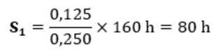
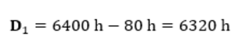

Erste Prüfung
Die Maschine hat das erste Prüfintervall durchlaufen. Das Prüfintervall i ist mit 1 anzugeben.
Die Maschine wird während des Prüfintervalls für Montagearbeiten eingesetzt. Die Lastkollektivklasse leicht ist zu wählen (Weitere Informationen siehe: „Lastkollektivfaktor bestimmen“).
Lastkollektivfaktor von gewählter Lastkollektivklasse in Tabelle eintragen. |
Kcp1 = 0,125 |
Die Anzeige der Betriebsstunden der Winde auf Bildschirmseite Betriebsstunden am Bildschirm zeigt absolute Betriebsstunden von 160 h an (Weitere Informationen siehe: „Effektive Betriebsstunden bestimmen“).
Absolute Betriebsstunden von Anzeige der Betriebsstunden der Winde auf Bildschirmseite Betriebsstunden am Bildschirm ablesen und in Tabelle eintragen. |
T1 = 160 h |
Verbrauchten Anteil der theoretischen Lebensdauer bestimmen (Weitere Informationen siehe: „Verbrauchten Anteil der theoretischen Lebensdauer bestimmen“). |

Fig. 5991: Verbrauchte Anteil der theoretischen Lebensdauer im ersten Prüfintervall
Fig. 5991: Verbrauchte Anteil der theoretischen Lebensdauer im ersten Prüfintervall
Verbrauchten Anteil der theoretischen Lebensdauer in Tabelle eintragen. |
S1 = 80 h |
Verbleibende theoretische Lebensdauer bestimmen (Weitere Informationen siehe: „Verbleibende theoretische Lebensdauer bestimmen“). |

Fig. 5992: Verbleibende theoretische Lebensdauer im ersten Prüfintervall
Fig. 5992: Verbleibende theoretische Lebensdauer im ersten Prüfintervall
Verbleibende theoretische Lebensdauer in Tabelle eintragen. |
D1 = 6320 h |
Die verbleibende theoretische Lebensdauer reicht für ein weiteres Prüfintervall aus. |
Winde von einer gesetzlich befähigten und institutionell autorisierten Person ohne Generalüberholung durch Unterschrift freigeben lassen. |
Verbleibende theoretische Lebensdauer im nächsten Prüfintervall i+1 auf Position der theoretischen Lebensdauer in Tabelle eintragen. |
Alle Ergebnisse mit Unterschrift dokumentieren und archivieren. |